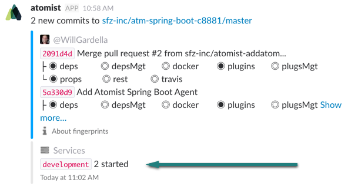
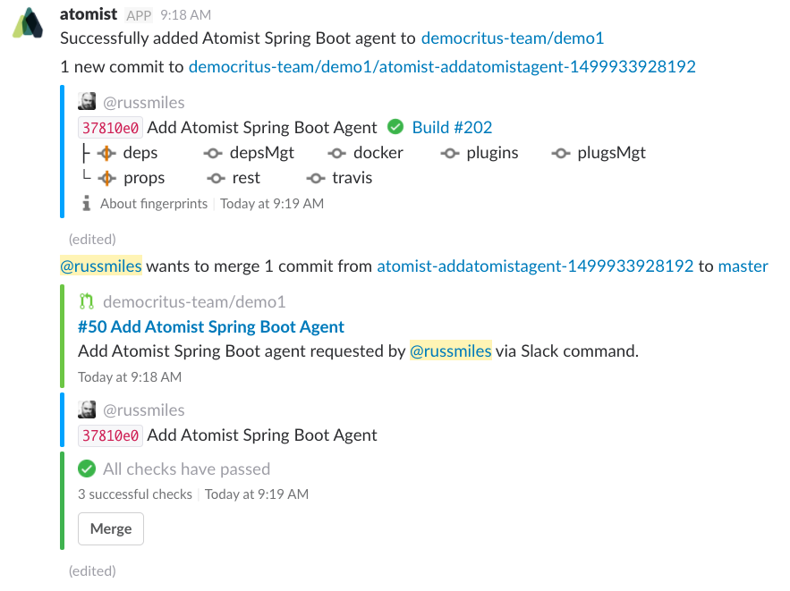
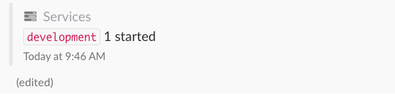

Spring Agent
The Atomist Spring Agent sends runtime notifications to Atomist about your Spring Boot application instances so that you can see this information in Slack.

Prerequisites¶
To use the Atomist Spring Agent you need to:
- Authorize the Atomist Bot on Slack and GitHub as described in getting-started.
- Be working on a Maven-based Spring Boot application.
Adding the Spring Agent¶
You can install the agent in a project either using the Atomist bot (recommended) or manually.
Adding the Spring Agent using the Bot¶
Start in a Slack channel that’s linked to the GitHub repository you want to add the agent to. You can check the association between Slack channel and GitHub repo by running the @atomist repos command.
In that channel, ask Atomist to add the agent:
@atomist add spring agent
This results in the bot creating a branch and PR on your repository that contains changes to the pom.xml and the application.yml.
If configured, a build of the branch is triggered with appropriate checks. When the checks complete, the bot prompts you to merge this branch into your project’s master branch. Be sure to merge the changes to complete installation.

When you first enable the agent, Atomist adds the spring-boot-agent dependency to your project’s pom.xml:
<dependency> <groupId>com.atomist</groupId> <artifactId>spring-boot-agent</artifactId> <version>0.1.2</version> </dependency>
If not already present, the public-atomist-release repository is added to the repositories block in your pom.xml so that the spring-boot-agent dependency can be resolved:
<repositories> <repository> <id>public-atomist-release</id> <name>Atomist Release</name> <url>https://atomist.jfrog.io/atomist/libs-release</url> <snapshots> <enabled>false</enabled> </snapshots> </repository> </repositories>
Finally Atomist adds a few properties to your project’s src/main/resources/application.yml file that identify and describe the application when runtime information is sent to your project’s Slack channel:
atomist:
enabled: true
debug: true
url: 'https://webhook.atomist.com/atomist/application/teams/T5P5H18V9'
environment:
domain: '${DOMAIN:development}'
pod: '${HOSTNAME:${random.value}}'
You can customise these properties using the usual [Spring Boot mechanisms][spring-boot-props].
Adding the Spring Agent Manually¶
If you prefer, you can add the agent to your application manually.
Add the following to your pom.xml:
<dependency> <groupId>com.atomist</groupId> <artifactId>spring-boot-agent</artifactId> <version>0.1.2</version> </dependency>
Because the agent is not available from Maven Central you must add the following Maven repository:
<repositories> <repository> <id>public-atomist-release</id> <name>Atomist Release</name> <url>https://atomist.jfrog.io/atomist/libs-release</url> <snapshots> <enabled>false</enabled> </snapshots> </repository> </repositories>
Finally add the following default properties to configure the agent:
atomist:
enabled: true
debug: true
url: 'https://webhook.atomist.com/atomist/application/teams/T5P5H18V9'
environment:
domain: '${DOMAIN:development}'
pod: '${HOSTNAME:${random.value}}'
Configuring the Spring Agent¶
The agent can be configured from the Spring Boot application.yml or
application.properties using the following settings:
atomist:
# enable or disable the agent
enabled: true
# enable trace output; this allows you to review the event messages the agent sends
debug: true
# configure the endpoint; {id} should be replaced by your Slack team id
url: 'https://webhook.atomist.com/atomist/application/teams/T5P5H18V9'
environment:
# use the following keys to send some information about your environment to Atomist
domain: '${DOMAIN:development}'
pod: '${HOSTNAME:${random.value}}'
Testing the Spring Agent¶
Once you have merged the new branch into your project’s master you can clone the project locally to test the agent by running the application locally using the standard Spring Boot Maven Plugin support:
> mvn spring-boot:run
If everything is configured correctly you will see application instance lifecycle messages for your Spring Boot application in your project’s Slack channel:

What information is shared by the Spring Agent?¶
Once the agent is installed and the application is running, the information that the agent sends Atomist appears in your applications DEBUG logging:
09:46:11.317 [eventTaskExecutor-1] DEBUG c.a.s.a.AgentEventSender - Atomist event about to be sent:
{
"git" : {
"sha" : "1818b54e396979fb422f24ede1d3373415a4282e",
"branch" : "master",
"url" : "git@github.com:democritus-team/demo1.git"
},
"pod" : "36a2d083d2eb9c5c16e66a79a3bb5ed1",
"domain" : "development",
"host" : "Bertrand.local",
"id" : "application:8080-46799-Bertrand.local",
"state" : "started",
"ts" : 1499935571272
}
Removing the Spring Agent¶
Remove the agent from your project at any time by deleting the spring-boot-agent dependency from your project’s pom.xml and deleting the atomist properties from your src/main/resources/application.yml file.